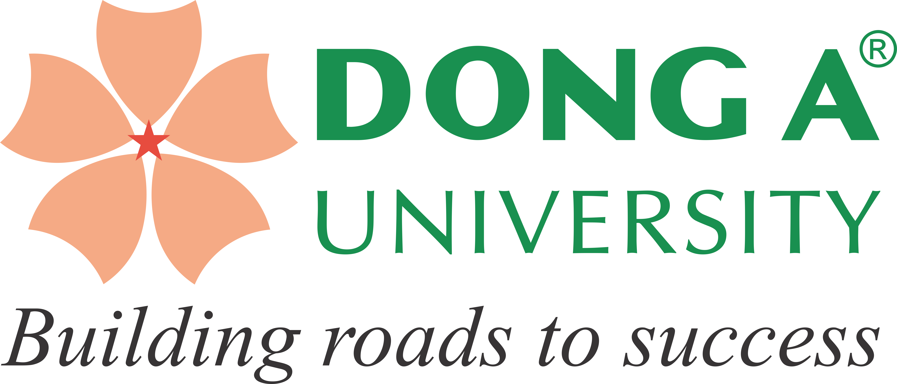
HƯỚNG DẪN TÂN SINH VIÊN
Thông Tin Đăng Nhập Mặc Định
Quét QR để xem hướng dẫn trên điện thoại
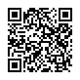
Sinh viên đăng nhập theo IDSV và mật khẩu mặc định:
- IDSV (Mã số sinh viên): Có trên phiếu thu học phí.
- Mật khẩu mặc định: ngày/tháng/năm sinh.
- Tên đăng nhập: 55500
- Mật khẩu: 03/09/2002 (Lưu ý: nhập đầy đủ cả dấu "/")
Bước 1: Thực Hiện Khảo Sát
Nhà trường tổ chức khảo sát tân sinh viên để nắm bắt được năng khiếu, hoàn cảnh gia đình, và ý kiến về quy trình nhập học. Bạn truy cập website theo IDSV và mật khẩu mặc định để thực hiện khảo sát trên máy tính tại trang https://sinhvien.donga.edu.vn.
-
Thực hiện đăng nhập:
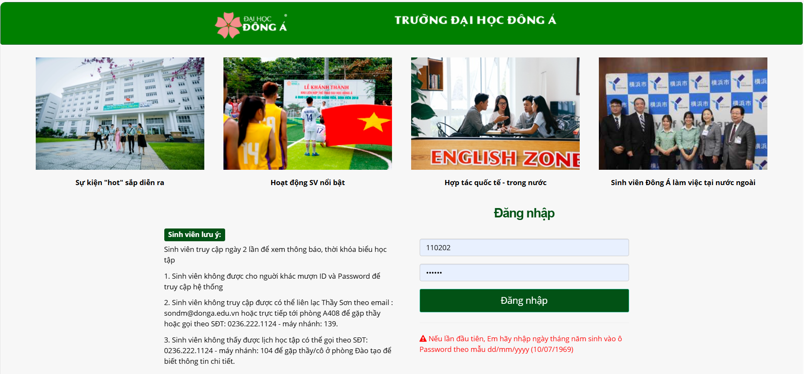
Các Phần Khảo Sát:
Khảo sát gồm 4 phần chính. Bạn hãy thực hiện lần lượt từng phần theo hướng dẫn sau:
Phần 1: Về Năng Khiếu Để Tham Gia Các Câu Lạc Bộ
Để giúp sinh viên có sân chơi thể hiện tài năng và phát huy năng khiếu, tạo niềm vui, hứng khởi trong học tập, bạn hãy chọn và mô tả các năng khiếu của mình trong phần này.
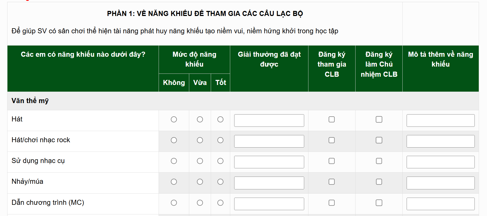
Phần 2: Về Hoàn Cảnh Gia Đình Sinh Viên
Bạn hãy cung cấp các thông tin về hoàn cảnh gia đình để nhà trường có thể nắm bắt và hỗ trợ kịp thời khi cần thiết.
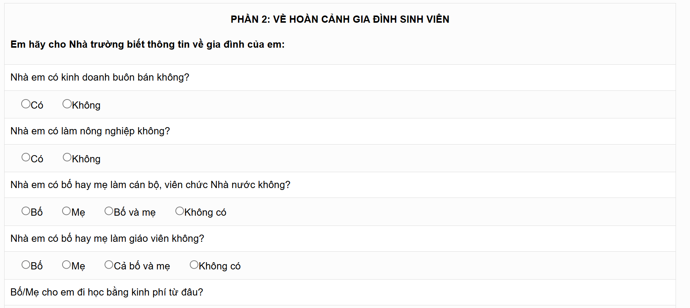
Phần 3: Về Quy Trình Nhập Học
Trong phần này, bạn sẽ đưa ra ý kiến về quy trình tiếp đón, hướng dẫn hồ sơ, làm thủ tục trên máy và hướng dẫn sử dụng phần mềm. Hãy đánh giá các tiêu chí theo mức độ hài lòng của bản thân.
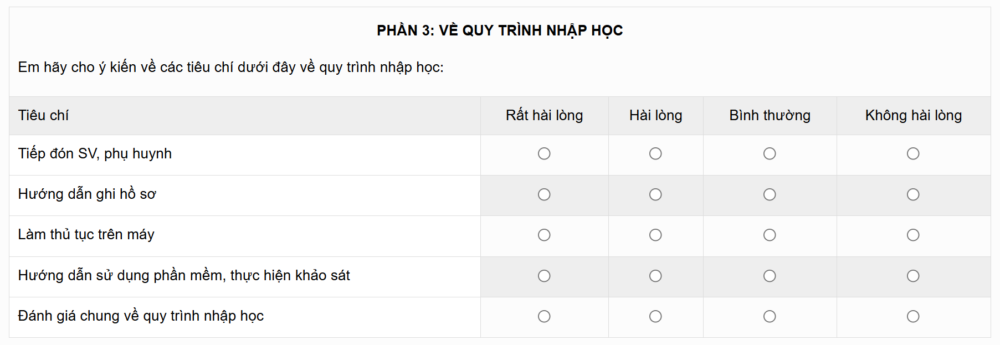
Phần 4: Các Thông Tin Khác
Ở phần này, bạn hãy đánh số thứ tự từ 1 đến 3 cho ba kênh thông tin giúp bạn biết đến trường Đại học Đông Á, với 1 là kênh đầu tiên bạn biết đến. Các ô còn lại hãy để trống.
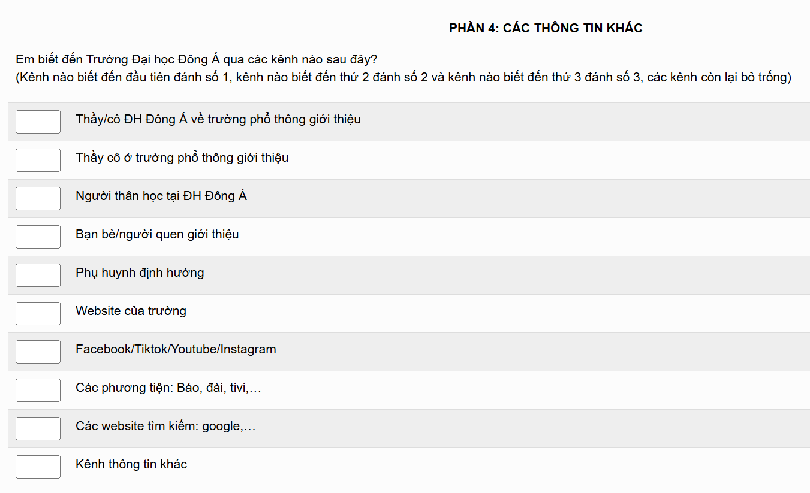
Cuối cùng, sau khi hoàn thành tất cả các phần, bạn hãy nhấn nút Lưu để hoàn thành.
Bước 2: Xem Thông Tin Trên Website
Sinh viên cần xem thường xuyên các thông tin quan trọng tại Cổng thông tin sinh viên https://my.uda.edu.vn để không bỏ lỡ bất kỳ thông báo nào từ nhà trường và quản lý tốt quá trình học tập của mình.
Hướng dẫn xem thông tin trên trang MyUDA
Sau khi đăng nhập thành công, bạn có thể dễ dàng truy cập và kiểm tra các nội dung sau:
-
Xem Thông báo của nhà trường: Tại trang chủ, bạn có thể xem các thông báo mới nhất từ trường, bao gồm các thông tin về học vụ, sự kiện, hay các hoạt động ngoại khóa.
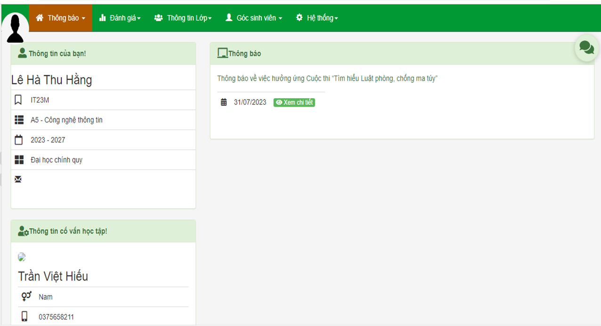
-
Xem Thời khoá biểu: Đây là mục giúp bạn tra cứu thời gian và địa điểm học của từng môn. Hãy thường xuyên kiểm tra để nắm rõ lịch học và sắp xếp thời gian biểu cá nhân một cách hợp lý.
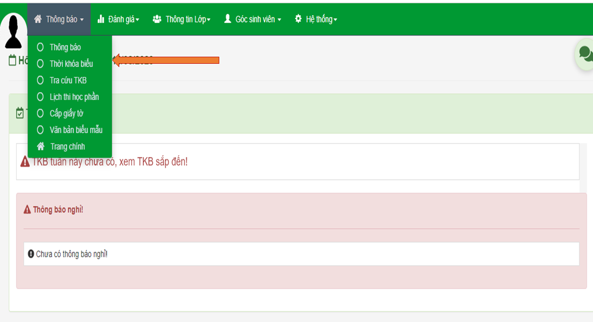
-
Xem Lịch thi học phần: Nắm rõ lịch thi cuối kỳ là rất quan trọng. Bạn có thể xem lịch thi của các học phần đã đăng ký để chuẩn bị ôn tập hiệu quả nhất.
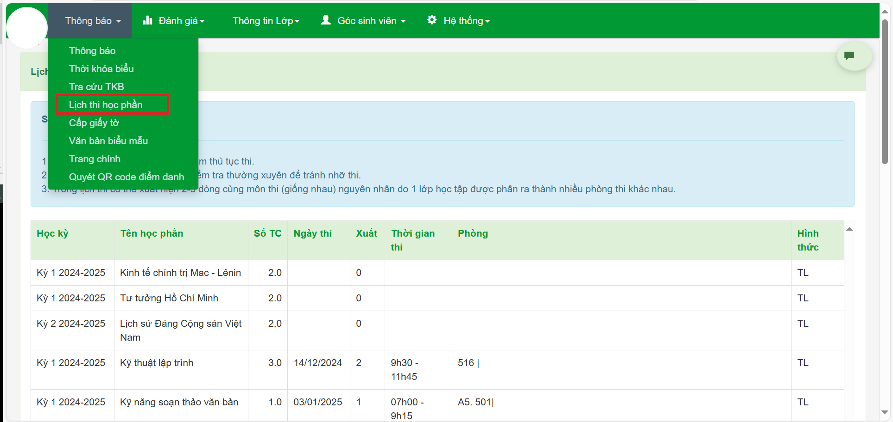
-
Đăng ký giấy tờ và xem Văn bản biểu mẫu: Bạn có thể dễ dàng yêu cầu các loại giấy tờ cần thiết như giấy xác nhận sinh viên, tạm hoãn nghĩa vụ quân sự. Ngoài ra, bạn cũng có thể tìm thấy các biểu mẫu đơn từ nhà trường để phục vụ cho các thủ tục hành chính.
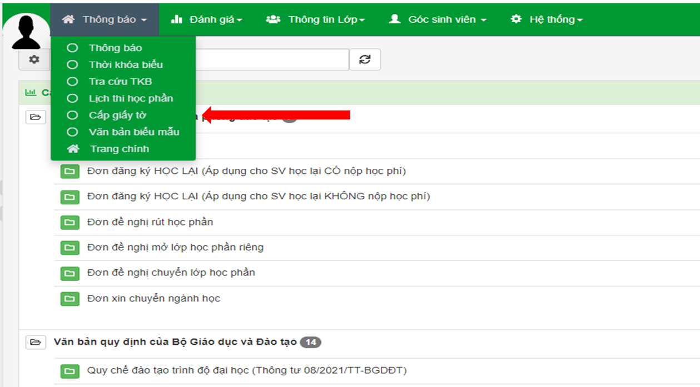
-
Cập nhật và kiểm tra Thông tin cá nhân: Đảm bảo thông tin cá nhân của bạn luôn chính xác. Nếu có bất kỳ sai sót nào, bạn có thể liên hệ phòng đào tạo để được hỗ trợ cập nhật kịp thời.
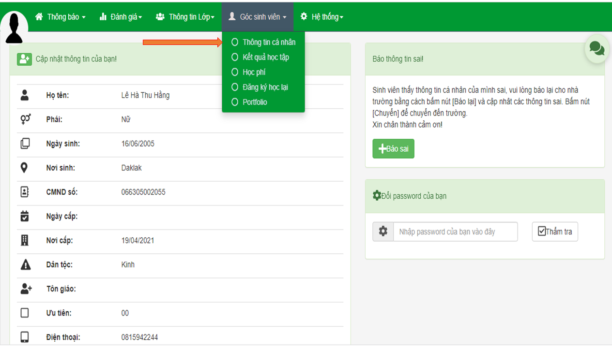
-
Xem Kết quả học tập: Theo dõi kết quả học tập từng học kỳ để biết được điểm số, điểm rèn luyện và tiến độ học tập của mình.
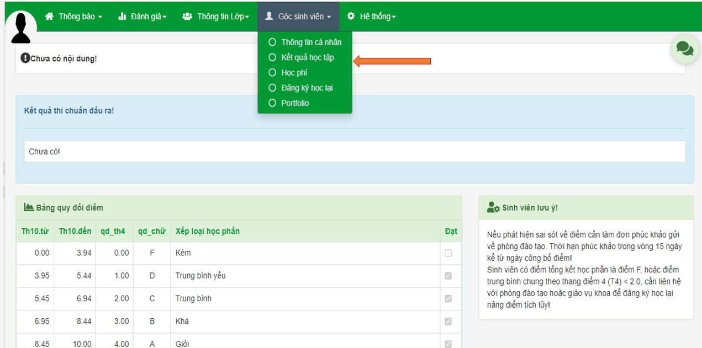
-
Xem Học phí: Tại đây, bạn sẽ tìm thấy thông tin chi tiết về các khoản học phí, số nợ công, và các hình thức thanh toán thuận tiện.
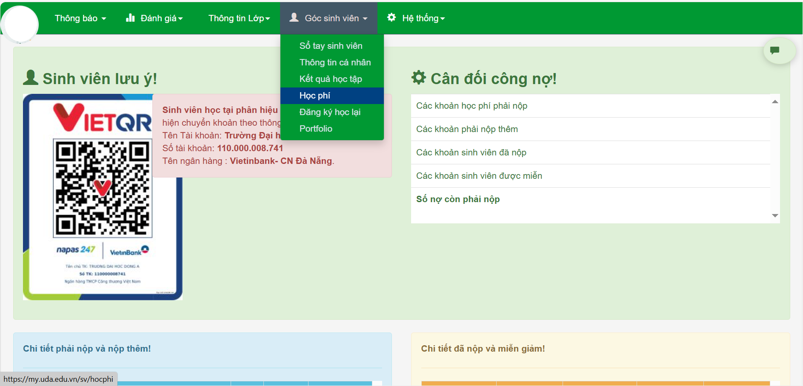
-
Hướng dẫn Đăng kí học lại: Nếu không may bạn phải học lại một môn học nào đó, mục này sẽ cung cấp đầy đủ thông tin và quy trình đăng ký.
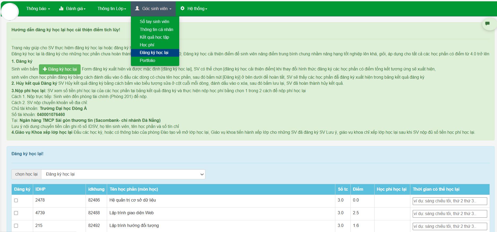
-
Xem Nội dung các học phần đào tạo: Tìm hiểu chi tiết về các học phần bạn sẽ học trong chương trình đào tạo, bao gồm số tín chỉ, lý thuyết và thực hành.
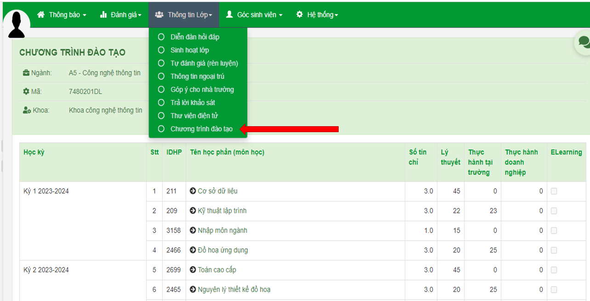
Bước 3: Đăng Ký Giấy Xác Nhận Trực Tuyến
Áp dụng cho các trường hợp cần giấy xác nhận để vay vốn sinh viên, tạm hoãn nghĩa vụ quân sự,...
Hướng dẫn đăng ký giấy xác nhận hoãn nghĩa vụ quân sự
Sinh viên thực hiện theo các bước sau để đăng ký giấy xác nhận hoãn nghĩa vụ quân sự:
-
Truy cập mục "Cấp giấy tờ": Trên trang chủ của my.uda.edu.vn, bạn vào mục Thông tin cá nhân (hoặc tương tự) và chọn Cấp giấy tờ trong menu thả xuống.
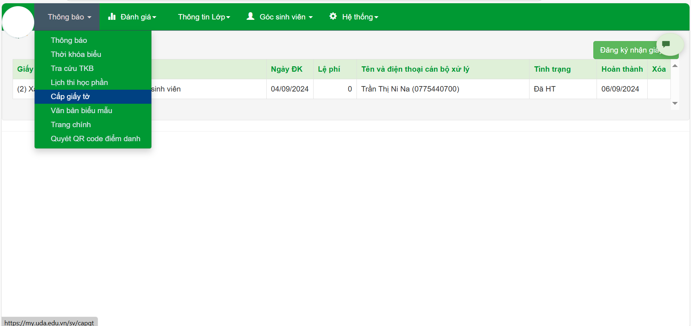
-
Chọn "Đăng ký nhận giấy": Trong trang cấp giấy tờ, hãy tìm và nhấn vào nút Đăng ký nhận giấy.
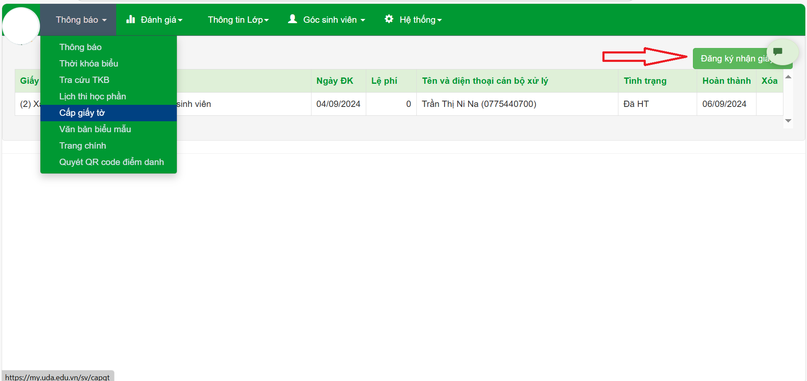
-
Chọn mẫu giấy cần thiết: Một danh sách các mẫu giấy tờ sẽ hiện ra. Bạn cần tìm và bấm vào nút xem ở dòng Xác nhận tạm hoãn NVQS cho nam sinh viên.
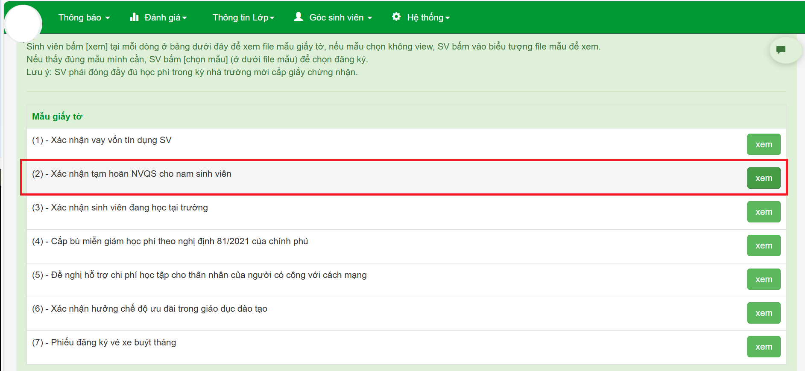
-
Kiểm tra thông tin cá nhân: Một trang sẽ hiện ra để bạn kiểm tra lại thông tin cá nhân. Hãy đảm bảo mọi thông tin đã chính xác, sau đó nhấn vào nút Tiếp theo.
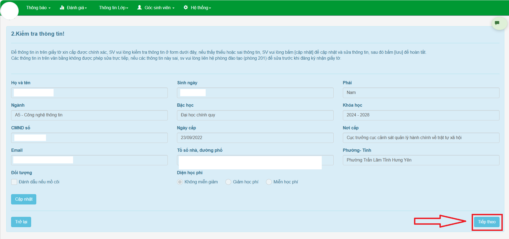
-
Điền thông tin và hoàn tất đăng ký: Tại trang đăng ký cuối cùng, bạn điền Lý do sử dụng (ví dụ: "Xin hoãn nghĩa vụ quân sự để đi học") và chọn Phương thức nhận. Sau đó, bấm nút Gửi đăng ký để hoàn tất.
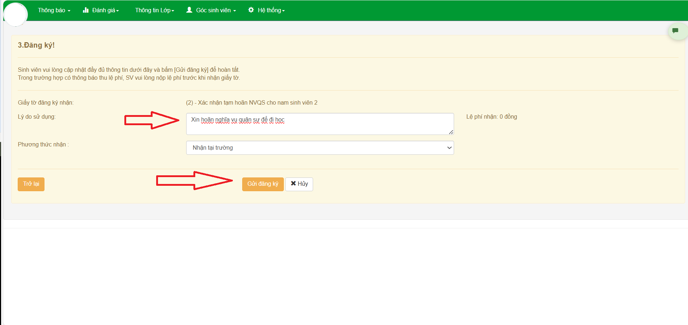
Bước 4: Tham Gia Kênh Zalo & Fanpage
1. Nhóm Zalo Chung K26 (Bắt buộc)

Kênh thông tin chính thức và quan trọng nhất cho toàn bộ sinh viên K26.
2. Kênh Thông Tin Fanpage

Cập nhật tin tức chính thức từ Phân hiệu.

Không gian giao lưu, chia sẻ của sinh viên.
3. Các Nhóm Chức Năng
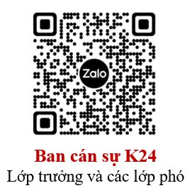
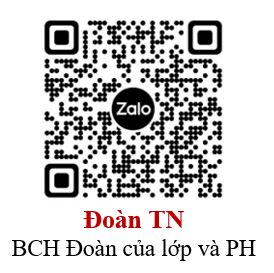
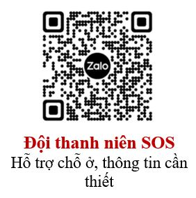
4. Các Câu Lạc Bộ - Đội Nhóm
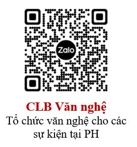
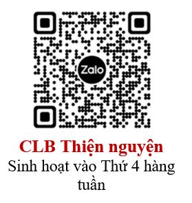
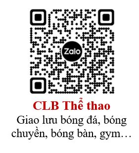
Bước 5: Xác Nhận Nhập Học Trên Cổng Bộ GD&ĐT
Đã đăng ký nguyện vọng vào trường Đại học Đông Á trước đó, hãy thực hiện xác nhận theo hướng dẫn sau. Đối với những bạn chưa đăng ký nguyện vọng vào trường ĐH Đông Á trước đây trên hệ thống của Bộ GD&ĐT, nhà trường sẽ chuyển các bạn vào đợt đăng ký nguyện vọng bổ sung sau và không cần thực hiện bước 5 này.
Đây là bước bắt buộc để hoàn tất thủ tục nhập học tại https://thisinh.thitotnghiepthpt.edu.vn
Hướng dẫn xác nhận nhập học trực tuyến
-
Bước 1: Truy cập vào website
Thí sinh sử dụng trình duyệt để truy cập vào cổng thông tin tuyển sinh: http://thisinh.thitotnghiepthpt.edu.vn. Đây là hệ thống chính thức do Bộ GD&ĐT quản lý.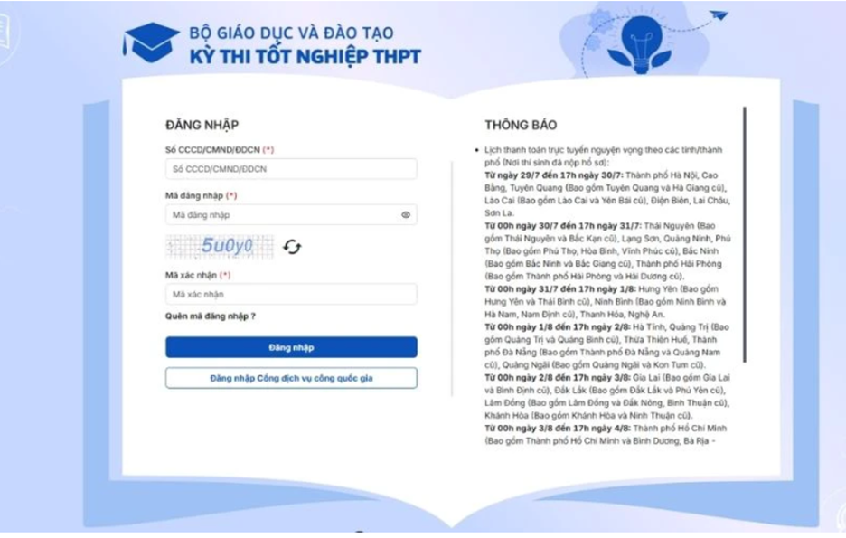
-
Bước 2: Điền số CMND, mã đăng nhập, mã xác nhận
Trên giao diện đăng nhập, thí sinh nhập đúng số CMND hoặc CCCD đã đăng ký trước đó. Sau đó, điền mã đăng nhập và mã xác nhận vào các ô tương ứng.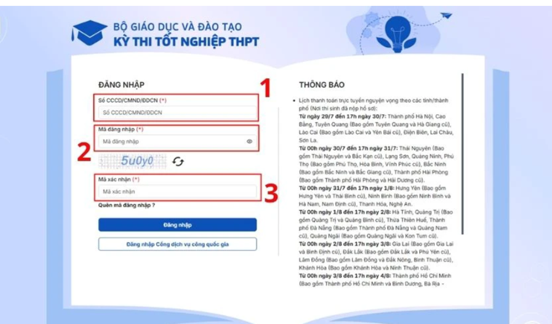
-
Bước 3: Nhấn nút Đăng nhập để vào hệ thống của Bộ GD
Sau khi điền đầy đủ các thông tin cần thiết, thí sinh nhấn nút Đăng nhập để truy cập. Nếu thông tin đúng, bạn sẽ được đưa vào trang quản lý cá nhân.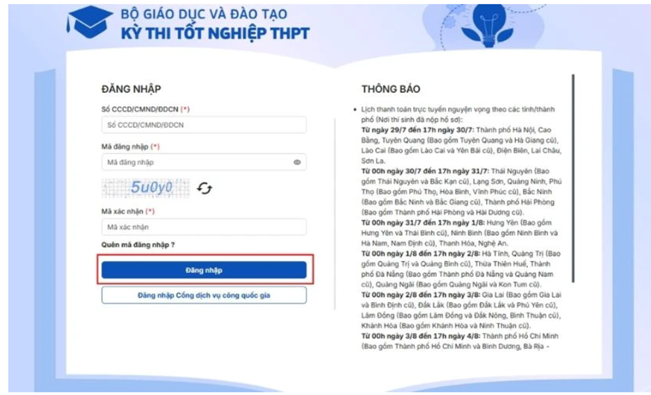
-
Bước 4: Chọn Menu, chọn chức năng Tra cứu kết quả xét tuyển sinh
Tại giao diện chính, thí sinh tìm đến Menu nằm ở góc trên bên trái màn hình (hoặc biểu tượng ba gạch ngang trên điện thoại). Nhấn vào đó và chọn Tra cứu kết quả xét tuyển sinh.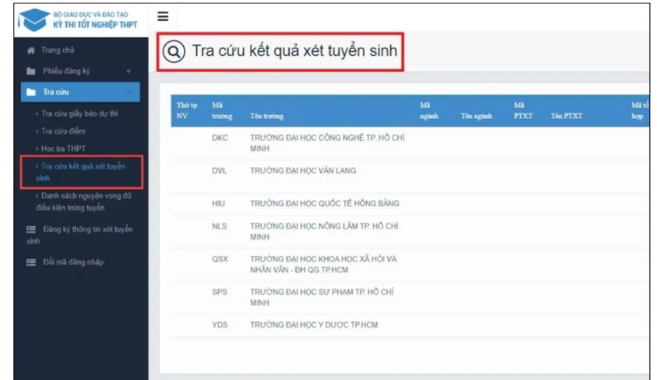
-
Bước 5: Xem kết quả xét tuyển đại học 2026
Tại mục tra cứu, hệ thống sẽ hiển thị các nguyện vọng đã đăng ký và kết quả trúng tuyển tương ứng. Những nguyện vọng có kết quả 'Trúng tuyển' sẽ được đánh dấu rõ ràng.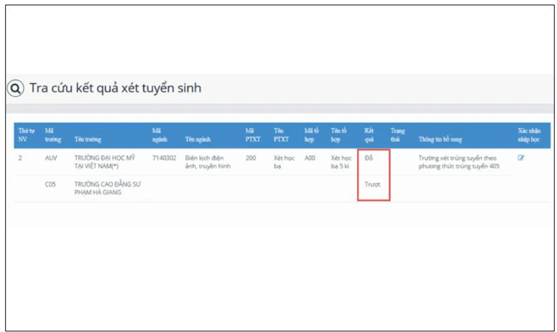
-
Bước 6: Nhấn vào biểu tượng Ghi ở mục Xác nhận nhập học
Ngay cạnh nguyện vọng trúng tuyển, hệ thống sẽ hiển thị biểu tượng Ghi hoặc Xác nhận. Thí sinh cần nhấn vào biểu tượng này để bắt đầu quy trình xác nhận nhập học.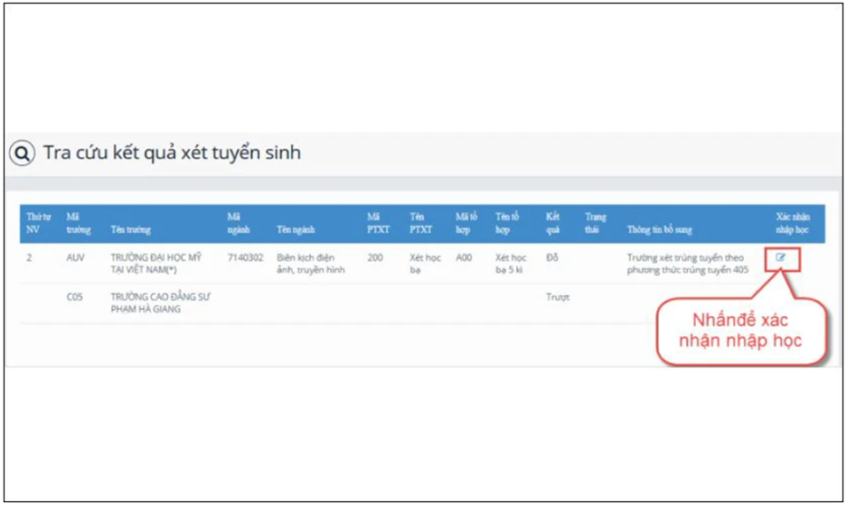
-
Bước 7: Chọn đồng ý để hoàn thành xác nhận nhập học
Sau khi nhấn vào biểu tượng Ghi, hệ thống sẽ hiển thị một hộp thoại xác nhận cuối cùng. Bạn cần chọn Đồng ý để hoàn tất quá trình xác nhận nhập học.
Lưu ý: Việc xác nhận này chỉ được thực hiện một lần duy nhất. Vì vậy hãy chắc chắn rằng bạn muốn học tại trường đã chọn trước khi nhấn Đồng ý. -
Bước 8: Kiểm tra trạng thái nhập học ở mục Trạng thái
Sau khi hoàn tất, quay trở lại giao diện chính và kiểm tra mục Trạng thái của nguyện vọng. Nếu hiện dòng chữ 'Đã xác nhận nhập học', nghĩa là bạn đã hoàn tất thành công.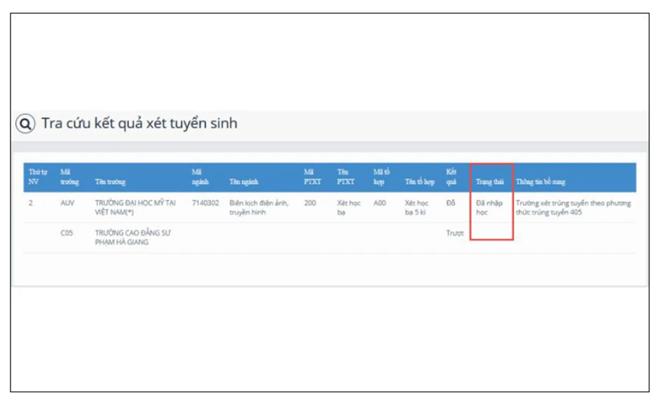
Các Mốc Thời Gian Đào Tạo Khóa 26
Chào mừng các Tân Sinh viên K26 đến với Đại học Đông Á! Dưới đây là các mốc thời gian quan trọng trong năm học 2026-2027 mà các bạn cần lưu ý:
| TT | Thời gian | Nội dung công việc |
|---|---|---|
| 1 | 13/8/2026 - 23/8/2026 | Nhập học: SV nhập học trong thời gian trước 17h ngày 23/08/2026 được cấp học bổng KHUYẾN HỌC 06 triệu đồng, các học bổng TÀI NĂNG sẽ xét và trao tại Lễ Khai giảng |
| 2 | 21/08/2026 | Trước 17h ngày 21/08/2026 Xác nhận nhập học trên hệ thống Bộ giáo dục và Đào tạo |
| 3 | 24/8/2026 - 28/08/2026 | Lãnh đạo PH, GV, SV các khoa sinh hoạt với SV theo khối (Môi trường học tập, tầm quan trọng của việc học ngoại ngữ, tin học, giới thiệu các CLB, giao lưu anh chị khóa trên)
|
| 4 | Chiều 24/8/2026 & Chiều 28/8/2026 | Khảo sát phân lớp ngoại ngữ đầu vào để kịp nâng cao trong hai năm đầu: SV khảo sát trên máy tính và phần vấn đáp ngắn, theo lịch của TT Khảo thí & TT Ngoại ngữ |
| 5 | 30/8/2026 - 3/9/2026 | Nghỉ lễ Quốc Khánh (2/9) |
| 6 | Sáng 04/09 (Phòng học) | Buổi 1: Sinh viên gặp GV khoa và CVHT/Hỗ trợ CVHT. XD tình đồng môn từ buổi ban đầu, SV ai cũng vui cũng thích, tạo môi trường cảm thông giúp nhau học tập; ý thức được việc xây dựng hình ảnh “NGƯỜI CÙNG THỜI”, “NGƯỜI ĐỒNG MÔN”; hăng hái đăng ký tham gia CLB các Tổ học tập; am hiểu về văn hóa ĐHĐA và con đường thành công. |
| 7 | Chiều 04/09 (Phòng học) | Buổi 2: Sinh viên gặp GV khoa và CVHT/Hỗ trợ CVHT. Khám phá PP lớp học đảo ngược và Canvas và nắm vững các quy định về quy chế học vụ. |
| 8 | Sáng 05/09 | Team building - Chương trình giao lưu gắn kết |
| 9 | Chiều 05/09 (Online) | Buổi 3: Tổ chức lớp dạy 1 buổi online. Đánh giá kết quả thu hoạch bài kiểm tra (Quiz) trên Canvas của SV; kiểm tra các nội dung SV thực hiện trên Canvas từ Module 1 đến Module 4; hướng dẫn cụ thể cho các SV chưa hoàn thành; hỗ trợ tư vấn và giải đáp các khó khăn về điều kiện sinh hoạt ở môi trường mới cho SV. |
| 10 | Sáng 07/09 (Hội trường) | Buổi 4: Học cùng diễn giả nổi tiếng (chia DS lớp: 500sv/ xuất). Chuyên đề 1 “Phương pháp học đại học trong thời đại AI” diễn giả ThS. Phạm Thanh Tuấn - Giám đốc doanh nghiệp xã hội Bồ Công Anh – Giảng viên khởi nghiệp đổi mới sáng tạo quốc gia |
| 11 | Chiều 07/09 (Hội trường) | Buổi 4: Học cùng diễn giả nổi tiếng (chia DS lớp: 500sv/ xuất)-tt. Chuyên đề 2 “Khởi nghiệp trong Kỷ nguyên số” diễn giả ThS. Phan Thị Thu Hằng - Giám đốc công ty Pơ Lăng, tham gia gọi vốn thành công tại Shark Tank Việt Nam mùa 7. |
| 12 | Sáng 08/09 (Hội trường) | Buổi 4: Học cùng diễn giả nổi tiếng (chia DS lớp: 500sv/ xuất)-tt. Chuyên đề 3 “Ứng dụng AI để nâng tầm Kỹ năng thuyết trình hiệu quả” diễn giả Bà Lê Thị Hải Trang - Phó Giám đốc Công ty TNHH Sự kiện Truyền thông Quang Vinh - CEO Hải Trang Academy. |
| 13 | Chiều 08/09 (Hội trường) | Buổi 5: SV Thành Công Với Chương Trình Đào Tạo Đã Chọn. Chương trình Khoa gặp gỡ tân SV (LĐK, GV, CVHT, DN và GVTG giỏi) và định hướng lộ trình đạt CĐR - tại HT Edison hoặc các Phòng học lớn theo lịch của P. QLĐT). |
| 14 | Sáng 09/9 (Hội trường, sảnh tầng 1) | Buổi 6+7: Lễ Khai giảng với chủ đề “Hội tụ khát vọng – Kiến tạo tương lai”. Học từ người truyền cảm hứng - MC Đoàn Nguyên Khang, Chuyên đề “Người Đại học Đông Á, kết nối thông minh - tự tin hội nhập” khơi mở tư duy và tiếp thêm động lực giúp SV thấu hiểu chính mình, phá bỏ giới hạn, tự tin thay đổi và vững vàng hơn trên con đường hiện thực hóa ước mơ. |
| 15 | Chiều 09/9 (Hội trường, sảnh tầng 1) | Buổi 8: Sinh hoạt chính trị đầu khóa. - An ninh trật tự, ATGT, trách nhiệm công dân (Diễn giả PA05) - Thông tin tình hình thời sự trong nước và quốc tế, tình hình biển đảo (Ban Tuyên giáo và Dân vận Tỉnh ủy Đắk Lắk) |
| 16 | Sáng 10/09 (Phòng học) | Buổi 9: Tổng kết chương trình đầu khóa |
| 17 | 07/09/2026 - 19/12/2026 | Học tập HK1 năm học 2026-2027 |